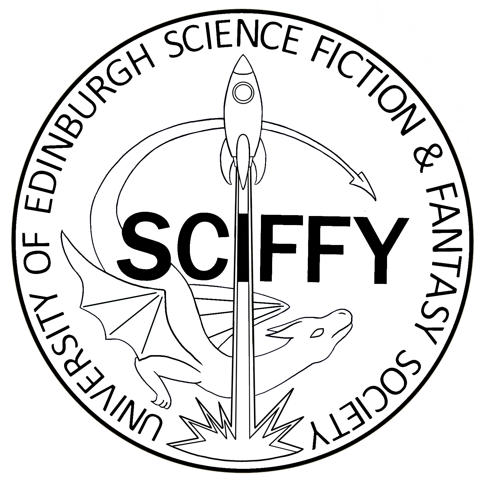
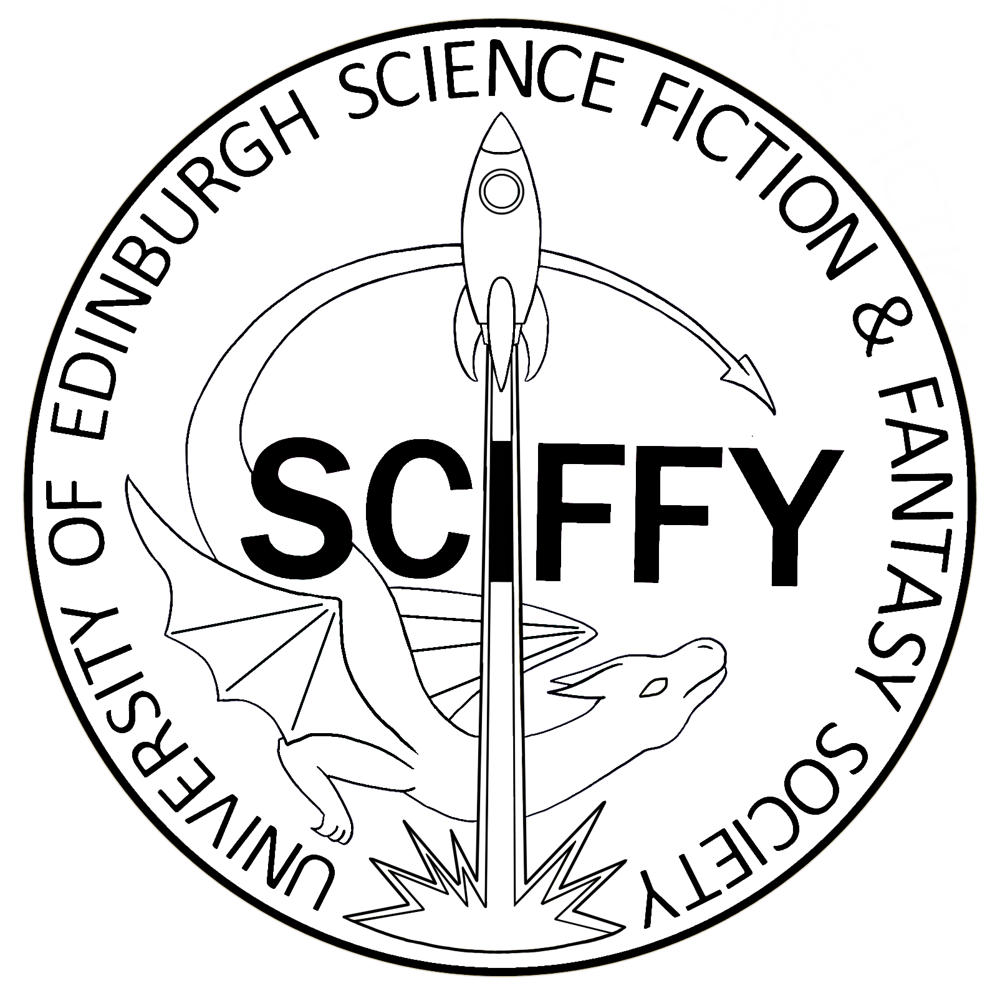

Logo created for the University of Edinburgh Science Fiction and Fantasy Society. Adopted by the society as the official logo in 2018, and was used on all society advertising, documentation and merchandise until the society was disbanded in 2024.
Logo created for Alix Prybyla's research group (Stone lab, University of Edinburgh), nicknamed the Bumblebee Brigade. The logo was primarily used as a profile for social media posts about the group, and on team t-shirts during outreach events.


Logos used on promotional materials and bingo cards for the annual Bingo Bees event at the Royal Botanic Garden Edinburgh, running while the Bumblebee Brigade was collecting data there from 2022 (left) to 2024 (right)
Logo designed to go on hoodies for the students and staff taking part in the 3rd year undergraduate research trip to Millport on the Island of Great Cumbrae for the University of Edinburgh Field Zoology Course.